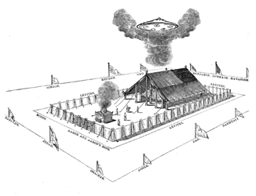
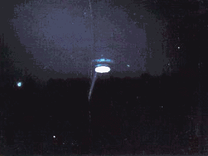
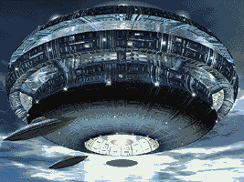
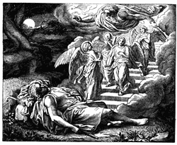

Christians believe that all the miraculous events of the Bible were supernatural occurences beyond rational explanation. Many claim that God is omnipotent and is not limited in any fashion yet the Bible itself reveals God to be VERY limited, especially in the methods he must use to interact with man. One of these methods that we will examine is God's need for physical crafts to transport himself and his angels from one location to another.
The Bible has many examples of God using flying vehicles to travel from one location to another. Often times we read of God hiding his spacecraft(s) in mysterious clouds. One reason God may have done this was in an attempt to hide his physical "chariot" or flying spaceship from the ignorant masses.
One of the first examples of God's use of cloud-covered UFO's in the Bible can be found in Exodus 13:21. In this passage, God is leading Moses and the Hebrews away from Egypt.
Exodus 13:21 And the LORD went before them by day in a pillar of a cloud, to lead them the way; and by night in a pillar of fire, to give them light; to go by day and night: 13:22 He took not away the pillar of the cloud by day, nor the pillar of fire by night, from before the people.
God used his celestial vehicle and its weaponry to blind the Egyptians while being a spotlight for the Israelites. In the following passage, God's physical spacecraft is called the "angel of God." When this craft moves itself to the rear of the Israelite camp, the cloud follows suit.
Exodus 14:19 And the angel of God, which went before the camp of Israel, removed and went behind them; and the pillar of the cloud went from before their face, and stood behind them: 14:20 And it came between the camp of the Egyptians and the camp of Israel; and it was a cloud and darkness to them, but it gave light by night to these: so that the one came not near the other all the night. 14:24 And it came to pass, that in the morning watch the LORD looked unto the host of the Egyptians through the pillar of fire and of the cloud, and troubled the host of the Egyptians, 14:25 And took off their chariot wheels, that they drave them heavily: so that the Egyptians said, Let us flee from the face of Israel; for the LORD fighteth for them against the Egyptians.
Another common title used by the authors of the Bible for the actual glowing spacecraft that transported the heavenly messengers was "the glory of the Lord." This craft was often described as rainbow colored or metalic and glowing.
16:10 And it came to pass, as Aaron spake unto the whole congregation of the children of Israel, that they looked toward the wilderness, and, behold, the glory of the LORD appeared in the cloud.
God explained to Moses that the reason for the cloud is so that people will recognize that it is God who was speaking with Moses and they will believe that Moses' word was God's word.
Exodus 19:9 And the LORD said unto Moses, Lo, I come unto thee in a thick cloud, that the people may hear when I speak with thee, and believe thee for ever.
The Bible describes God's descent upon the mount in a manner which would be consistent with an ancient Hebrew describing a rocketship landing:
Exodus 19:16 And it came to pass on the third day in the morning, that there were thunders and lightnings, and a thick cloud upon the mount, and the voice of the trumpet exceeding loud; so that all the people that was in the camp trembled. 19:17 And Moses brought forth the people out of the camp to meet with God; and they stood at the nether part of the mount. 19:18 And mount Sinai was altogether on a smoke, because the Lord descended upon it in fire: and the smoke thereof ascended as the smoke of a furnace and the whole mount quaked greatly.
God threatened any who attempted to get a close look at him or his celestial spacecraft with death. One reason for this threat may have been due to a radiation hazard, since God speaks of how he will not allow the radiation to "break forth" upon those who have been properly protected (by protective garments) or "sanctified."
Exodus 19:21 And the LORD said unto Moses, Go down, charge the people, lest they break through unto the LORD to gaze, and many of them perish. 19:22 and let the priests also, which come near to the LORD, sanctify themsleves, lest the LORD break forth upon them. 19:23 And Moses said unto the LORD, The people cannot come up to mount Sinai: for thou chargedst us, saying, Set bounds about the mount, and sanctify it. 19:24 And the LORD said unto him, Away, get thee down, and thou shalt come up, thou, and Aaron with thee: but let not the priests and the people break through to come up unto the LORD lest he break forth upon them.
After Moses warned the people about God's desire for privacy, he returned to God's spacecraft. God's glowing craft: "Glory of the Lord" was now parked on the mount.
Exodus 24:15 And Moses went up into the mount, and a cloud covered the mount. 24:16 And the glory of the LORD abode upon mount Sinai, and the cloud covered it six days: and the seventh day he called unto Moses out of the midst of the cloud. 24:18 And Moses went into the midst of the cloud, and gat him up into the mount: and Moses was in the mount forty days and forty nights.
While up in God's cloud, Moses received instruction on how to construct the Ark of the Covenant, the Tabernacle, and how to offer sacrifices that will be "pleasing" to God. The Ark of the Covenant was a type of energy storage device that will be discussed in greater detail in a later article. Later, God once again descended in a cloud, this time he beamed down to speak with Moses "face to face."
Exodus 33:9 And it came to pass, as Moses entered into the tabernacle, the cloudy pillar descended, and stood at the door of the tabernacle, and the LORD talked with Moses. 33:10 And all the people saw the cloudy pillar stand at the tabernacle door: and all the people rose up and worshipped, every man in his tent door. 33:11 And the LORD spake unto Moses face to face, as a man speaketh unto his friend. And he turned again into the camp: but his servant Joshua, the son of Nun, a young man, departed not out of the tabernacle.
When the Lord makes a physical appearance it is from a beam of energy described as a cloud in the daylight and a pillar of fire in the nighttime. Modern witnesses of UFOs have described alien creatures transporting themselves, humans, and animals to and from their flying saucers in a similar beam of energy.
Exodus 34:5 And the LORD descended in the cloud, and stood with him there, and proclaimed the name of the LORD.
One time God's spacecraft landed in the tabernacle and Moses couldn't get in because the spacecraft was blocking the entrance. As long as God's "Glory" remained parked in the tabernacle, the Hebrews camped where they were. When God's "Glory" took off again, the Hebrews continued with their journey.
Exodus 40:34 Then a cloud covered the tent of the congregation, and the glory of the LORD filled the tabernacle. 40:35 And Moses was not able to enter into the tent of the congregation, because the cloud abode thereon, and the glory of the LORD filled the tabernacle. 40:36 And when the cloud was taken up from over the tabernacle, the children of Israel went onward in all their journeys: 40:37 But if the cloud were not taken up, then they journeyed not till the day that it was taken up. 40:38 For the cloud of the LORD was upon the tabernacle by day, and fire was on it by night, in the sight of all the house of Israel, throughout all their journeys.
In the Book of Leviticus, Aaron's two sons attempted to offer incense to God without following the proper protective protocols and they were destroyed by God's "fire." Moses then told Aaron that God warned them of the dangers of not following the protective protocols of "sanctification" before approaching the craft and since they violated the protocols, they paid the price.
Leviticus 10:1 And Nadab and Abihu, the sons of Aaron, took either of them his censer, and put fire therein, and put incense thereon, and offered strange fire before the Lord, which he commanded them not. 10:2 And there went out fire from the Lord, and devoured them, and they died before the Lord. !0;3 Then Moses said unto Aaron, This is it that the Lord spake, saying, I will be sanctified in them that come nigh me, and before all the people I will be glorified. And Aaron held his peace.
This event is very similar to the time when the Ark of the Covenant was being transported on a cart. When the Ark was shaken and appeared to be about to fall, one of the cart drivers reached out to stablize it. Since he was not properly insulated he was immediately electrocuted and died on the spot. (2 Samuel 6:6-9)
Apparently, when God is pulling maintenance on his "Glory" there are times when it is dangerous to be near the vehicle. This is probably due to the changes in the fabric of space/time which have been described to take place around alien vehicles which are able to alter their relative densities during interdimensional travel. Betty Andreason describes a similar phenomenon in her encounters with alien vehicles. (See "The Watchers" by Raymond Fowler)
Leviticus 16:1 And the LORD spake unto Moses after the death of the two sons of Aaron, when they offered before the LORD, and died; 16:2 And the LORD said unto Moses, Speak unto Aaron thy brother, that he come not at all times into the holy place within the veil before the mercy seat, which is upon the ark; that he die not: for I will appear in the cloud upon the mercy seat.
The Book of Numbers describes God using his "cloud" to show the Hebrews where to move to. They would build their tabernacle (a tent surrounded by a tall wall) wherever God's cloud flew off to.
Numbers 9:15 And on the day that the tabernacle was reared up, the cloud covered the tabernacle, namely, the tent of the testimony: and at even there was upon the tabernacle as it were the appearance of fire, until the morning. 9:16 So it was alway: the cloud covered it by day, and the appearance of fire by night. 9:17 And when the cloud was taken up from the tabernacle, then after that the children of Israel journeyed: and in the place where the cloud abode, there the children of Israel pitched their tents. 9:18 At the commandment of the LORD the children of Israel journeyed, and at the commandment of the LORD they pitched: as long as the cloud abode upon the tabernacle they rested in their tents. 9:19 And when the cloud tarried long upon the tabernacle many days, then the children of Israel kept the charge of the LORD, and journeyed not. 9:20 And so it was, when the cloud was a few days upon the tabernacle; according to the commandment of the LORD they abode in their tents, and according to the commandment of the LORD they journeyed. 9:21 And so it was, when the cloud abode from even unto the morning, and that the cloud was taken up in the morning, then they journeyed: whether it was by day or by night that the cloud was taken up, they journeyed. 9:22 Or whether it were two days, or a month, or a year, that the cloud tarried upon the tabernacle, remaining thereon, the children of Israel abode in their tents, and journeyed not: but when it was taken up, they journeyed.
God continued to use his "cloud" to show the Hebrews where to go:
Numbers 10:11 And it came to pass on the twentieth day of the second month, in the second year, that the cloud was taken up from off the tabernacle of the testimony. 10:12 And the children of Israel took their journeys out of the wilderness of Sinai; and the cloud rested in the wilderness of Paran. 10:34 And the cloud of the LORD was upon them by day, when they went out of the camp. 10:35 And it came to pass, when the ark set forward, that Moses said, Rise up, LORD, and let thine enemies be scattered; and let them that hate thee flee before thee. 10:36 And when it rested, he said, Return, O LORD, unto the many thousands of Israel.
We then see an interesting example of God again using his "fiery" beam weapon to punish his people who complained about their poor living conditions. It appears that the "fire" was unleashed intentionally by the aliens in order to maintain order. When Moses pleads to the "Lord," the fire is finally put out, God then descends in his "cloud" to view his handiwork.
Numbers 11:1 And when the people complained, it displeased the LORD: and the LORD heard it; and his anger was kindled; and the fire of the LORD burnt among them, and consumed them that were in the uttermost parts of the camp. 11:2 And the people cried unto Moses; and when Moses prayed unto the LORD, the fire was quenched. 11:3 And he called the name of the place Taberah: because the fire of the LORD burnt among them. 11:25 And the LORD came down in a cloud, and spake unto him, and took of the spirit that was upon him, and gave it unto the seventy elders: and it came to pass, that, when the spirit rested upon them, they prophesied, and did not cease.
Moses married a black (Ethiopian) woman. When Moses' sister; Miriam and his brother in law; Aaron pointed out that Moses has disobeyed God's command that his chosen people only marry within their own race, God beamed down from the pillar of the cloud and stood in the temple proclaiming that Moses was special and that God will not talk to him in dreams but face to face. God then beamed back up and the cloud departed, leaving Miriam (but not Aaron) diseased with leprosy.
Numbers 12:5 And the LORD came down in the pillar of the cloud, and stood in the door of the tabernacle, and called Aaron and Miriam: and they both came forth. 12:10 And the cloud departed from off the tabernacle; and, behold, Miriam became leprous, white as snow: and Aaron looked upon Miriam, and, behold, she was leprous.
The Bible continues to describe God and his unusual "cloud" in numerous locations, making it clear that when God makes a personal appearance, it is from this descending cloud. When the cloud covers the tabernacle, God's glowing spacecraft becomes visible once more.
Numbers 14:14 And they will tell it to the
inhabitants of this land: for they have heard that thou LORD art among this
people, that thou LORD art seen face to face, and that thy cloud standeth over
them, and that thou goest before them, by day time in a pillar of a cloud, and
in a pillar of fire by night. 16:42 And it came to pass, when the congregation
was gathered against Moses and against Aaron, that they looked toward the
tabernacle of the congregation: and, behold, the cloud covered it, and the
glory of the LORD appeared.
Deuteronomy 1:32 Yet in this thing ye did not believe the LORD your God, 1:33
Who went in the way before you, to search you out a place to pitch your tents
in, in fire by night, to shew you by what way ye should go, and in a cloud by
day.
Deuteronomy 4:11 And ye came near and stood under the mountain; and the
mountain burned with fire unto the midst of heaven, with darkness, clouds, and
thick darkness. 4:12 And the LORD spake unto you out of the midst of the fire:
ye heard the voice of the words, but saw no similitude; only ye heard a
voice.
Deuteronomy 31:15 And the LORD appeared in the tabernacle in a pillar of a
cloud: and the pillar of the cloud stood over the door of the
tabernacle.
These clouds may not necessarily be the result of combustion but may be a result of Hydrogen drives which have been described in UFO literature. The clouds may be condensed water vapor which is a bi-product of the alien's cold fusion energy source. Betty Andreason describes the source of these clouds in detail in Raymond Fowler's book: "The Watchers" (pages 76-78) While under hypnosis, she describes an alien refueling procedure in much the same way that Ezekiel described his encounter which we will discuss later in this article.
"(The alien craft is) spinning around and round and water's with it. And, what's happening is, these silver balls are starting to light up...But, it looks like that spinning is causing steam or mist all over--Sending out, like, cloud or puffs of steam or something...Oh, this is beautiful, beautiful! Tch, there's bright light now right in that spinning part in the center? And the steam? It's like clouds all around. And it's causing rainbows...You can hardly see anymore though because of the, [pause] the fog. That stuff is causing such a fog all over now. There's so much foggy fog. It's so warm, it's almost smothering. Whew!! And there's lightning coming all over the place! OOOOOOOh, that's scary!"
Some of the "clouds" may be distortions of the air caused by the transport beam which God uses to transport personnel from the celestial ship to the ground and vice versa. Psalm 18 and the following verses from 2 Samuel suggest that in some instances these Godly clouds are the exhaust from a noisy, smoking rocketship.
2 Samuel 22:8 Then the earth shook and trembled; the foundations of heaven moved and shook, because he was wroth. 22:9 There went up a smoke out of his nostrils, and fire out of his mouth devoured: coals were kindled by it. 22:10 He bowed the heavens also, and came down; and darkness was under his feet. 22:11 And he rode upon a cherub, and did fly: and he was seen upon the wings of the wind. 22:12 And he made darkness pavilions round about him, dark waters, and thick clouds of the skies. 22:13 Through the brightness before him were coals of fire kindled. 22:14 The LORD thundered from heaven, and the most High uttered his voice. 22:15 And he sent out arrows, and scattered them; lightning, and discomfited them. 22:16 And the channels of the sea appeared, the foundations of the world were discovered, at the rebuking of the LORD, at the blast of the breath of his nostrils.
In several instances, the smoke of God's "cloud" becomes unbearable to humans and God's craft obstructs free passage through the temple.
1 Kings 8:10 And it came to pass, when the priests
were come out of the holy place, that the cloud filled the house of the LORD,
8:11 So that the priests could not stand to minister because of the cloud: for
the glory of the LORD had filled the house of the LORD.
2 Chronicles 5:13 It came even to pass, as the trumpeters and singers were as
one, to make one sound to be heard in praising and thanking the LORD; and when
they lifted up their voice with the trumpets and cymbals and instruments of
musick, and praised the LORD, saying, For he is good; for his mercy endureth
for ever: that then the house was filled with a cloud, even the house of the
LORD; 5:14 So that the priests could not stand to minister by reason of the
cloud: for the glory of the LORD had filled the house of God.
The references to God's use of clouds to transport himself or hide his presence continue throughout the Old Testament:
Psalms 78:14 In the daytime also he led them with
a cloud, and all the night with a light of fire.
Psalms 99:7 He spake unto them in the cloudy pillar: they kept his testimonies,
and the ordinance that he gave them.
Psalms 104:3 Who layeth the beams of his chambers in the waters: who maketh the
clouds his chariot: who walketh upon the wings of the wind:
Psalms 105:39 He spread a cloud for a covering; and fire to give light in the
night.
Isaiah 19:1 The burden of Egypt. Behold, the LORD rideth upon a swift cloud,
and shall come into Egypt: and the idols of Egypt shall be moved at his
presence, and the heart of Egypt shall melt in the midst of it.
Jeremiah 3:44 Thou hast covered thyself with a cloud, that our prayer should
not pass through.
God's use of "clouds" which hid his true mode of transportation were not limited to the angelic beings of the Old Testament. Jesus and his disciples had their own experiences with these celestial clouds. Jesus is said to have been beamed up into the clouds in a similar manner as that used by God.
Matthew 17:1 (Mark 9:2-6, Luke 9:28-35) And after
six days Jesus taketh Peter, James, and John his brother, and bringeth them up
into an high mountain apart, 17:2 And was transfigured before them: and his
face did shine as the sun, and his raiment was white as the light. 17:3 And,
behold, there appeared unto them Moses and Elias talking with him. 17:4 Then
answered Peter, and said unto Jesus, Lord, it is good for us to be here: if
thou wilt, let us make here three tabernacles; one for thee, and one for Moses,
and one for Elias. 17:5 While he yet spake, behold, a bright cloud overshadowed
them: and behold a voice out of the cloud, which said, This is my beloved Son,
in whom I am well pleased; hear ye him. 17:6 And when the disciples heard it,
they fell on their face, and were sore afraid.
Matthew 24:29 (Mark 13:24-26) Immediately after the tribulation of those days
shall the sun be darkened, and the moon shall not give her light, and the stars
shall fall from heaven, and the powers of the heavens shall be shaken: 24:30
And then shall appear the sign of the Son of man in heaven: and then shall all
the tribes of the earth mourn, and they shall see the Son of man coming in the
clouds of heaven with power and great glory.
Matthew 26:64 (Luke 21:27) Jesus saith unto him, Thou hast said: nevertheless I
say unto you, Hereafter shall ye see the Son of man sitting on the right hand
of power, and coming in the clouds of heaven.
Acts 1:9 And when he had spoken these things, while they beheld, he was taken
up; and a cloud received him out of their sight. 1:10 And while they looked
stedfastly toward heaven as he went up, behold, two men stood by them in white
apparel; 1:11 Which also said, Ye men of Galilee, why stand ye gazing up into
heaven? this same Jesus, which is taken up from you into heaven, shall so come
in like manner as ye have seen him go into heaven
Then there is the famous "rapture" scripture which describes in lurid detail, how those who are best suited for "God" and his purposes will be beamed up into the clouds to be with the Lord in his spacecraft. Locked forever into the pillars of the temple, with no memory of the past and no individual will or thought, ceaselessly intoning praises to an alien energy collector. "Holy, Holy, Holy, Holy, Holy, Holy, Holy..."
1 Thessalonians 4:16 For the Lord himself shall descend from heaven with a shout, with the voice of the archangel, and with the trump of God: and the dead in Christ shall rise first: 4:17 Then we which are alive and remain shall be caught up together with them in the clouds, to meet the Lord in the air: and so shall we ever be with the Lord.
And the apocalyptic book of Revelations has its own share of references to God's minions traveling in "clouds." It describes how a fleet of alien craft commanded by a "cloud" riding "Son of Man" will receive an order from the mothership (through another "angel" or alien craft) to gather up those humans which will best serve the alien agenda using a transport device which is described as a "sickle." It then describes how the alien mothership known as the New Jerusalem will descend into the Earth's atmosphere.
Revelations 1:7 Behold, he cometh with clouds; and
every eye shall see him, and they also which pierced him: and all kindreds of
the earth shall wail because of him. Even so, Amen.
Revelations 11:12 And they heard a great voice from heaven saying unto them,
Come up hither. And they ascended up to heaven in a cloud; and their enemies
beheld them.
Revelations 14:14 And I looked, and behold a white cloud, and upon the cloud
one sat like unto the Son of man, having on his head a golden crown, and in his
hand a sharp sickle. 14:15 And another angel came out of the temple, crying
with a loud voice to him that sat on the cloud, Thrust in thy sickle, and reap:
for the time is come for thee to reap; for the harvest of the earth is ripe.
14:16 And he that sat on the cloud thrust in his sickle on the earth; and the
earth was reaped.
Revelations 21:2 And I John saw the holy city, new Jerusalem, coming down from
God out of heaven, prepared as a bride adorned for her husband.
Periodically, the writers of the books of the Bible gave a more detailed description of the vehicles which the "Gods" flew around in. When attempting to analyze the desriptions of the ancient authors of the Bible, we must remember that they didn't have the same technological point of reference which modern man has. Any light source was generally attributed to fire or something burning. Moses described a glowing in the bushes as a "burning bush." (Exodus 3:2) Imagine how a man from several thousand years ago would describe a television or a tractor beam which raises things into the air. The testimonies of modern alien abductees, such as Ed Walters of Gulf Breeze fame, describe a beam of light (a tractor beam) which carried them from the ground into a hovering spacecraft (See "UFO Abductions in Gulf Breeze" by Ed and Francis Walters). The ancient authors of the Bible, upon witnessing similar phenomena used labels such as "pillar of fire" or "whirlwind." Similarly when describing vehicles which transported personnel, the ancient authors referred to them as chariots of fire. The abduction of Elijah by one of God's alien spacecraft is described in the following fashion:
2 Kings 2:11 And it came to pass, as they still went on, and talked, that, behold, there appeared a chariot of fire, and horses of fire; and parted them both asunder; and Elijah went up by a whirlwind into heaven.
One of the most famous UFO related descriptions in the Bible is given by the author of the book of Ezekiel. In this description he first tells of the approach of God's famous cloud, he then describes the vehicles which were hidden in the cloud, calling them "the likeness of the glory of the Lord." The four smaller vehicles had "wings" which were retractable engines which emitted a rumbling sound. These vehicles perform amazing feats of aerial acrobatics, flashing from one place to another like lightning, similar to the foo-fighters described in the 1940's. Each vehicle is accompanied by what can only be called a flying saucer; a "wheel within a wheel." This description parallels numerous modern UFO's sightings. These four vehicles land before Ezekiel while a metalic mothership hovers overhead. Note that Ezekiel refers to the lightnings and rainbow colored reflection from the shiny surface of the vehicles, just as Betty Andreason described in the earlier cited reference.
Ezekiel 1:4 And I looked, and, behold, a whirlwind came out of the north, a great cloud, and a fire infolding itself, and a brightness was about it, and out of the midst thereof as the colour of amber, out of the midst of the fire. 1:5 Also out of the midst thereof came the likeness of four living creatures. And this was their appearance; they had the likeness of a man. 1:6 And every one had four faces, and every one had four wings. 1:7 And their feet were straight feet; and the sole of their feet was like the sole of a calf's foot: and they sparkled like the colour of burnished brass. 1:8 And they had the hands of a man under their wings on their four sides; and they four had their faces and their wings. 1:9 Their wings were joined one to another; they turned not when they went; they went every one straight forward. 1:10 As for the likeness of their faces, they four had the face of a man, and the face of a lion, on the right side: and they four had the face of an ox on the left side; they four also had the face of an eagle. 1:11 Thus were their faces: and their wings were stretched upward; two wings of every one were joined one to another, and two covered their bodies. 1:12 And they went every one straight forward: whither the spirit was to go, they went; and they turned not when they went. 1:13 As for the likeness of the living creatures, their appearance was like burning coals of fire, and like the appearance of lamps: it went up and down among the living creatures; and the fire was bright, and out of the fire went forth lightning. 1:14 And the living creatures ran and returned as the appearance of a flash of lightning. 1:15 Now as I beheld the living creatures, behold one wheel upon the earth by the living creatures, with his four faces. 1:16 The appearance of the wheels and their work was like unto the colour of a beryl: and they four had one likeness: and their appearance and their work was as it were a wheel in the middle of a wheel. 1:17 When they went, they went upon their four sides: and they turned not when they went. 1:18 As for their rings, they were so high that they were dreadful; and their rings were full of eyes round about them four. 1:19 And when the living creatures went, the wheels went by them: and when the living creatures were lifted up from the earth, the wheels were lifted up. 1:20 Whithersoever the spirit was to go, they went, thither was their spirit to go; and the wheels were lifted up over against them: for the spirit of the living creature was in the wheels. 1:21 When those went, these went; and when those stood, these stood; and when those were lifted up from the earth, the wheels were lifted up over against them: for the spirit of the living creature was in the wheels. 1:22 And the likeness of the firmament upon the heads of the living creature was as the colour of the terrible crystal, stretched forth over their heads above. 1:23 And under the firmament were their wings straight, the one toward the other: every one had two, which covered on this side, and every one had two, which covered on that side, their bodies. 1:24 And when they went, I heard the noise of their wings, like the noise of great waters, as the voice of the Almighty, the voice of speech, as the noise of an host: when they stood, they let down their wings. 1:25 And there was a voice from the firmament that was over their heads, when they stood, and had let down their wings. 1:26 And above the firmament that was over their heads was the likeness of a throne, as the appearance of a sapphire stone: and upon the likeness of the throne was the likeness as the appearance of a man above upon it. 1:27 And I saw as the colour of amber, as the appearance of fire round about within it, from the appearance of his loins even upward, and from the appearance of his loins even downward, I saw as it were the appearance of fire, and it had brightness round about. 1:28 As the appearance of the bow that is in the cloud in the day of rain, so was the appearance of the brightness round about. This was the appearance of the likeness of the glory of the LORD. And when I saw it, I fell upon my face, and I heard a voice of one that spake. 2:1 And he said unto me, Son of man, stand upon thy feet, and I will speak unto thee.
Ezekiel sees these same vehicles after God sends six executioners through Jerusalem to slaughter every man woman and child that isn't wailing about the iniquities that are taking place in the city. He calls the smaller vehicles, "cherubims" and once more describes the flying saucers and the mothership.
Ezekiel 10:3 Now the cherubims stood on the right side of the house, when the man went in; and the cloud filled the inner court. 10:4 Then the glory of the LORD went up from the cherub, and stood over the threshold of the house; and the house was filled with the cloud, and the court was full of the brightness of the LORD's glory. 10:5 And the sound of the cherubims' wings was heard even to the outer court, as the voice of the Almighty God when he speaketh. 10:6 And it came to pass, that when he had commanded the man clothed with linen, saying, Take fire from between the wheels, from between the cherubims; then he went in, and stood beside the wheels. 10:7 And one cherub stretched forth his hand from between the cherubims unto the fire that was between the cherubims, and took thereof, and put it into the hands of him that was clothed with linen: who took it, and went out. 10:8 And there appeared in the cherubims the form of a man's hand under their wings. 10:9 And when I looked, behold the four wheels by the cherubims, one wheel by one cherub, and another wheel by another cherub: and the appearance of the wheels was as the colour of a beryl stone. 10:10 And as for their appearances, they four had one likeness, as if a wheel had been in the midst of a wheel. 10:11 When they went, they went upon their four sides; they turned not as they went, but to the place whither the head looked they followed it; they turned not as they went. 10:12 And their whole body, and their backs, and their hands, and their wings, and the wheels, were full of eyes round about, even the wheels that they four had. 10:13 As for the wheels, it was cried unto them in my hearing, O wheel. 10:14 And every one had four faces: the first face was the face of a cherub, and the second face was the face of a man, and the third the face of a lion, and the fourth the face of an eagle. 10:15 And the cherubims were lifted up. This is the living creature that I saw by the river of Chebar. 10:16 And when the cherubims went, the wheels went by them: and when the cherubims lifted up their wings to mount up from the earth, the same wheels also turned not from beside them. 10:17 When they stood, these stood; and when they were lifted up, these lifted up themselves also: for the spirit of the living creature was in them. 10:18 Then the glory of the LORD departed from off the threshold of the house, and stood over the cherubims. 10:19 And the cherubims lifted up their wings, and mounted up from the earth in my sight: when they went out, the wheels also were beside them, and every one stood at the door of the east gate of the LORD's house; and the glory of the God of Israel was over them above. 10:20 This is the living creature that I saw under the God of Israel by the river of Chebar; and I knew that they were the cherubims. 10:21 Every one had four faces apiece, and every one four wings; and the likeness of the hands of a man was under their wings. 10:22 And the likeness of their faces was the same faces which I saw by the river of Chebar, their appearances and themselves: they went every one straight forward.
The Old Testament contains an additional reference to alien spacecraft and their tractor beams which parallels modern alien abduction experiences. Jacob believed that he dreamed of a ladder with beings ascending and descending to "heaven" on it.
Genesis 28:10 And Jacob went out from Beersheba, and went toward Haran. 28:11 And he lighted upon a certain place, and tarried there all night, because the sun was set; and he took of the stones of that place, and put them for his pillows, and lay down in that place to sleep. 28:12 And he dreamed, and behold a ladder set up on the earth, and the top of it reached to heaven: and behold the angels of God ascending and descending on it. 28:13 And, behold, the LORD stood above it, and said, I am the LORD God of Abraham thy father, and the God of Isaac: the land whereon thou liest, to thee will I give it, and to thy seed;
A similar event is recorded in the book "Searchers" by Ron Felber. In the account given by a married couple, on October 21, 1989 they witnessed nine glowing objects over the Mojave Desert. While on a hunting trip, they observed a mothership descend from a cloud just as in Moses' days.
"The spacecraft. Huge. Descending from out of a dense cloud. The object literally capped the valley, then stopped, hovering perhaps one hundred yards above the desert floor. The craft was larger than anything they ever imagined could fly. More than a football field in diameter and shaped like a disk with an elevated dome that rose up from its center, it was encircled by brilliant white lights flashing in what appeared to be coordinated, coded rhythms. Together they watched in awe, stunned as the huge craft shot a probe perhaps two hundred feet in diameter, down to the ground, then began transporting objects both into and out of the spacecraft. From the disk's underbelly hung six smaller units the size of helicopters and designed like miniature versions of the mothercraft that suddenly become visible." (pg. 58, 59)
The couple described the probe as a "tunnel of light" which was beaming objects (animals and plants) up and down from the desert floor. They, just like the biblical Jacob, believed that they must have been dreaming.
Later Jacob encounters these aliens again, when they tell him that they are "the God of Bethel" and command him to return to the land of his fathers (Genesis 31:11-13)
As we read the Bible with an open mind and a discerning eye, it becomes clear that the heavenly messengers of ancient times flew in the same type of starships which are seen by UFO watchers today. We are tempted to ask, in the famous words of Cpt. James T. Kirk, "Why does God have need of a starship?" Obviously, God is NOT the omnipotent, omniscient, creator of all things that we have been told he is. The God of the Bible is nothing more than an alien life form that is more advanced than mankind. As we become more technologically advanced and more independent as a species, this "God" will return to reap the harvest of souls and claim those who are slaves to the fear-programming which has inprisoned the minds of humanity. In this manner God will maintain his flock of obedient, subservient sheep and keep his energy stores potent. The ugly truth of God's tyrannical plans has finally been revealed! Break free of the programming! Join the resistance forces today!
Return to the Luciferian Liberation Front's Main Page.
E-Mail your questions and comments.